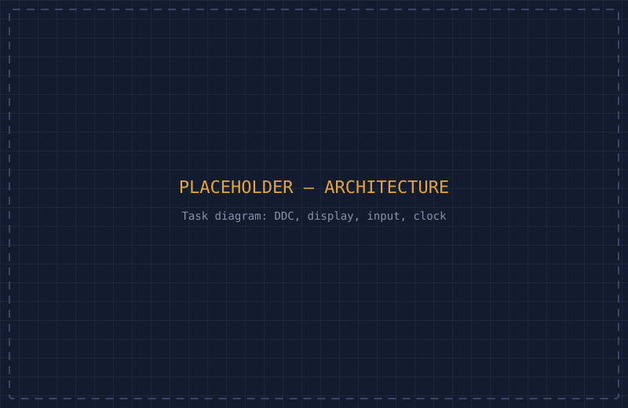
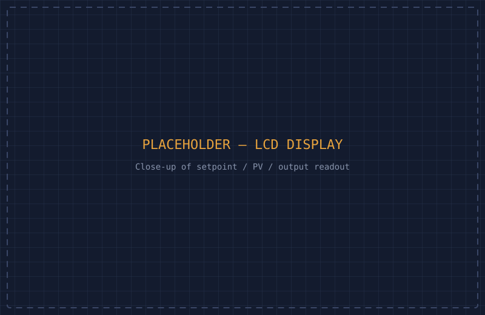
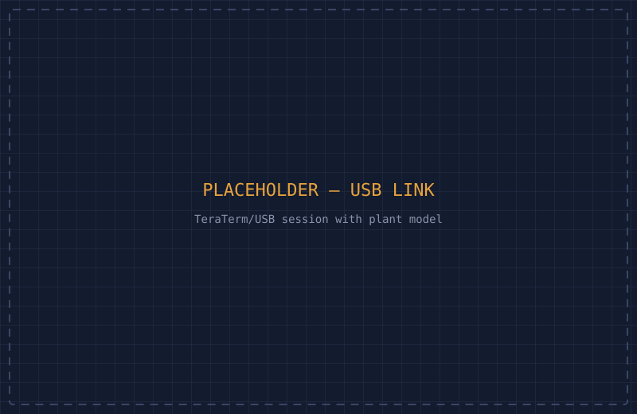
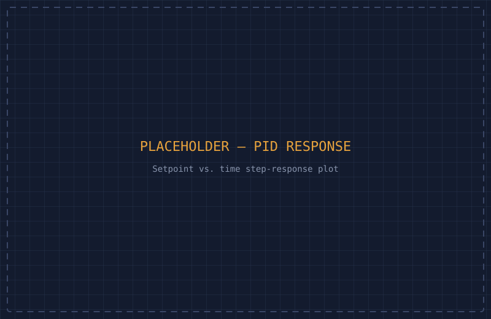

STM32F4 dev board running the controller, LCD showing live setpoint/PV/output.
A multi-task real-time PID controller on an STM32F4 running uC/OS-III — dedicated control, display, input, and clock tasks coordinating over shared data structures to hit a hard 200ms control deadline.
<a class="repo-link"> once you push this project to GitHub, same as the oscilloscope page.
images/rtos-controller/ with the matching filename, replacing
the placeholder SVG of the same name. Since the plant is simulated
(no physical hardware being controlled), diagrams and results carry
more weight here than hardware photos:
hero.svg → hero.jpg — STM32F4 board + LCD, powered on, showing live valuesarchitecture.svg → architecture.png — task diagram: DDC control, display, input, and clock tasks and how they share datalcd-closeup.svg → lcd-closeup.jpg — close-up of the LCD readout (setpoint / process variable / controller output)response-graph.svg → response-graph.png — setpoint step-response plot (setpoint vs. time), same style as a P/PD control plotteraterm.svg → teraterm.png — TeraTerm/USB session showing live communication with the LabVIEW plant modelThe brief: build an embedded controller that performs direct digital control (DDC) of a hot-air plant's temperature using a PID algorithm, running on an STM32 board rather than a PC. Operators need to switch between manual and automatic control, adjust the setpoint live from onboard buttons, and see live status on an LCD — all while the control loop itself has a hard real-time constraint: it has to run every 200ms, reliably, regardless of what the rest of the system is doing.
Rather than one monolithic loop handling everything, the system is built as multiple tasks under uC/OS-III, a preemptive priority-based RTOS: a control (DDC) task running the discretized PID algorithm on a fixed 200ms cycle, an operator display task updating the LCD, an operator input task handling button presses for manual/auto switching and setpoint changes, and a clock task. They coordinate through shared data structures rather than direct calls into each other — the control task doesn't need to know the display task exists, and vice versa.

Because the control task is hard real-time, it runs at the highest priority — uC/OS-III's preemptive scheduler can interrupt a lower-priority task (like a display refresh) the instant the control task needs to run, which is what actually guarantees the 200ms deadline gets hit rather than just usually getting hit.
The PID algorithm itself is the discretized version of the continuous-time controller: the differential and integral terms are replaced with their finite-difference equivalents so the whole thing can run as a fixed-timestep calculation. Manual and automatic modes switch with a bumpless transfer, so flipping between them doesn't cause a sudden jump in the controller output. The controller talks to a simulated hot-air plant model (running in LabVIEW on a PC) over USB/TeraTerm for closed-loop testing, and gains were tuned using both open-loop and closed-loop Ziegler–Nichols methods.


